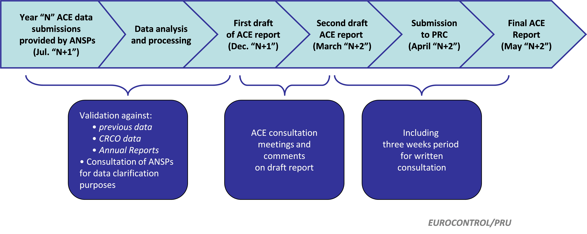

2 Production process and use of ANSPs Annual Reports
2.1 ACE report production process
The ACE report is produced by the Performance Review Unit with the support of the ACE Working Group, including ANSPs, regulatory authorities and airspace users’ representatives. The process leading to the production of the ACE report, which comprises data analysis and consultation, is summarised in Figure 2.1 below.

In order to ensure comparability among ANSPs and the quality of the analysis, the information submitted by the ANSPs is subject to a thorough analysis and verification process which makes extensive use of ANSPs’ Annual Reports and of their statutory financial accounts.
During this process a number of issues can emerge:
Annual Reports with disclosure of financial accounts are not available for some ANSPs (see Section 2.2 below). This removes one important element in view of validating the financial data submitted.
ANSPs which are involved in non-ANS activities (such as airport ownership and management) do not necessarily disclose separate accounts for their ANS and non-ANS activities. This means that the financial data submitted for the ANS activities cannot be validated with the information provided in the Annual Report.
Except for a few ANSPs, Annual Reports do not disclose the separate costs for the various segments of ANS (such as en-route and terminal ANS) which means that the cost breakdown provided under the En-route and Terminal columns in the ACE data submissions cannot be fully reconciled.
As ANSPs progressively comply with the SES Regulation on Service Provision, which requires publication of Annual Reports including statutory accounts, and separation of ANS from non-ANS activity in ANSPs internal accounts, some of these shortcomings are expected to be gradually overcome.
In most cases, data recorded in the Network Manager (NM) database are used as the basis for the output metrics of the ACE data analysis.
2.2 ANSPs’ Annual Reports
ANSPs’ Annual Reports provide a valuable means of validating the ACE data.
The SES Service Provision Regulation (European Parliament and Council of the European Union 2004) came into force on 20 April 2004 and is applicable to ANSPs Financial Accounts in all EU Member States (plus Switzerland and Norway). This Regulation is also applicable to States which have signed the ECAA agreement or a Common Aviation Area agreement with the European Union, although the timing of its implementation is not yet decided for individual States. Among other provisions, the SPR requires that ANSPs meet certain standards of information disclosure (transparency) and reporting, and in particular that:
ANSPs should draw up, submit to audit and publish their Financial Accounts (Art.12.1);
in all cases, ANSPs should publish an Annual Report and regularly undergo an independent audit (Art 12.2); and,
ANSPs should, in their internal accounting, identify the relevant costs and income for ANS broken down in accordance with EUROCONTROL’s principles for establishing the cost-base for route facility charges and the calculation of unit rates and, where appropriate, shall keep consolidated accounts for other, non-air navigation services, as they would be required to do if the services in question were provided by separate undertakings (Art 12.3). The latter requirement is particularly relevant for the ANSPs which are part of an organisation which owns, manages and operates airports, such as HCAA and DHMI1.
Although it should be noted that DHMI is not covered by the SES regulations.↩︎